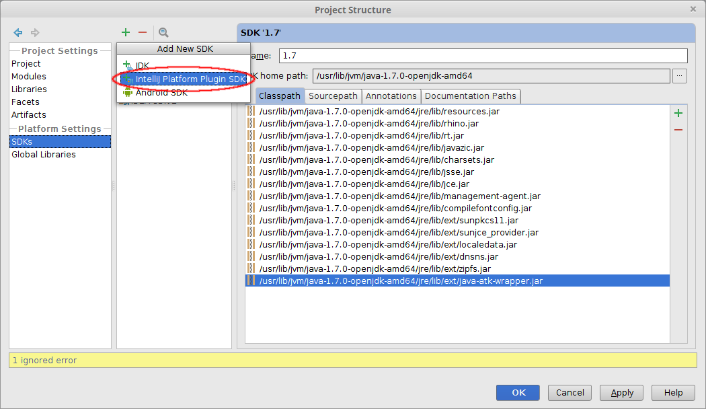

- Home
- About Saros
- Installation & Set-Up
- Support
- Develop on Saros
- Check-Out and First Steps
- Ongoing Work
- Guidelines
- Tools
- Processes
- Mailinglists
- Bug Tracker
- Saros@Sourceforge
- Google Summer of Code
- FAQ in daily practice
- Update local code to master
- Revert local changes
- Upload a new patch set
- Building in Gerrit failed!
- Get & run someones change
- Change? Patch set? Submit?
- Check Gerrit permissions
- Delete local branch
- Duplicate Location Error
- Review a change
- Run STF tests locally
- STF tests fail
- Set up STF tests
- Write STF tests
- Git use-cases
- Technical Documentation
- Research
- Contact
Testing Saros/I locally
In order two Saros for IntelliJ, you have to run two instances of Saros locally.
The easiest way to test this is to run Saros for Eclipse and Saros for IntelliJ and connect the two instances. In this case, both a .project and an .iml file have to be present, otherwise the IDEs can not open the modules.
However, if you want to test using two IntelliJ instances, some preparation is necessary. Simply starting the plugin with two run configurations will not work, it only results in a "Process finished with exit code 3" error.
Quick overview:
Why does it not work like in Eclipse?
This is because two IDEA instances can not share one home directory (for plugin development ${idea.home}/system/plugins-sandbox). TO work around this, you have to create another IDEA SDK with another IDEA home directory. The problem is that it is not possible to change a module's IDEA SDK depending on the run configuration, so we have to create a second Project with a different IDEA SDK. The following guideline will guide you through setting up a second project with another SDK. It assumes that you have one Saros/I correctly set up in a folder called saros.
Create a new project
- In IntelliJ, create a new empty project "File" > "New Project"

- Give it a descriptive name (e.g. "saros-bob"), different from the original saros project
- In the dialog asking you where to open this project choose "New Window"
Now you should be inside the project structure dialog of the new project. If not go there via "File" > "Project Structure"
Creating a second IDEA SDK
First we have to create a second SDK with a differenct working directory. Go to the SDKs page.
- Click on the big green "+" and select "IntelliJ Platform Plugin SDK"

- The default selection for the SDK Home directory is fine.
- Rename the new SDK to "IDEA SDK 2".
- Change the "Sandbox Home" to "[...]/system/plugins-sandbox2"

- Go the "Project" page and select IDEA SDK 2 as Project SDK

Import the core module
Now import the core module.
- In the new project, go to "Project Settings" > "Modules", click the big green "+" and choose Import Module.

- Select de.fu_berlin.inf.dpp.core\de.fu_berlin.inf.dpp.core.iml.
Adding libraries
A module details page will pop-up showing many red libraries. We will now add them:
- Then go to the "Libraries" page and click on the big green "+" and select "Java".

- Add the next missing library from saros/de.fu_berlin.inf.dpp.core/lib/ (e.g. "commons-codec-1.3.jar")

- Repeat until all missing dependencies are resolved.
- The library swt-debug.jar from de.fu_berlin.inf.dpp.ui\lib has to be added, too.
- Attention: The libraries smack, smackx, smackx-debug get a wrong default name. If this dialog appears click "Cancel".

Do not change the library names in the core module! This would be committed to git and lead to merge conflicts.
Instead, change the library names (in the "Libraries" tab) instead. The correct names are as above "smack, smackx, smackx-debug"
Now your module page for the core module should look like this:

Add the UI project & UI Frontend
We are planning to unify the UI across both code bases. For this end there is a UI project and a UI frontend project, that is only used for development at the moment. In the "Modules" page click on the big green "+" to add it and select the UI project's .iml file and the ui.frontend project's .iml file:

Add the Saros/I Project
Now you can add the Saros/I:
- In the "Modules" page, click on the big green "+" again.
- Select the file saros/de.fu_berlin.inf.dpp.intellij/de.fu_berlin.inf.dpp.intellij.iml file from the original saros folder.
Now the projects are properly set up.
As the last step, create a run configuration. Now you can execute guest 2 instances of Saros for IntelliJ, from 2 host instances (you need to have both projects opened in two windows).